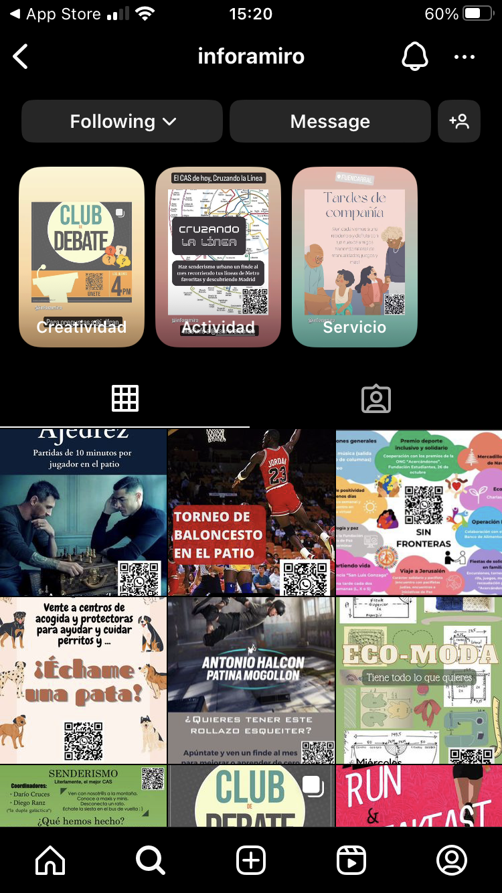

Inforamiro
Reflexión:
Junto con otros tres compañeros, dirigí una página de Instagram dedicada a publicar actualizaciones sobre las últimas noticias y talleres en el instituto. Este proyecto fue una experiencia enriquecedora que me permitió asumir el rol de coordinador de contenido, lo que implicaba organizar y planificar las publicaciones, asegurando que la información fuera precisa y relevante. Además, trabajé estrechamente con el equipo para diseñar estrategias de marketing digital que aumentaran el alcance y la interacción de nuestra página. En mi rol, también fui responsable de la creación de contenido visual y escrito, utilizando herramientas de diseño gráfico y redactando textos atractivos para captar la atención de nuestra audiencia. Colaboré con mis compañeros para establecer un calendario de publicaciones y monitorizar las métricas de engagement, lo que nos permitió ajustar nuestras estrategias y mejorar continuamente. El proyecto no solo me ayudó a mejorar mis habilidades de comunicación digital y marketing, sino que también reforzó mi capacidad de trabajo en equipo y liderazgo. La página de Instagram se convirtió en una herramienta valiosa para la comunidad escolar, facilitando el acceso a noticias y talleres, y fomentando una mayor participación en las actividades del instituto. A través de este proyecto, aprendí la importancia de la coordinación, la planificación y la comunicación efectiva, habilidades que serán útiles en el futuro.
Galería:
- 